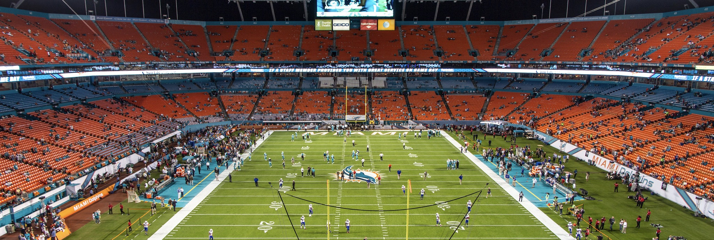
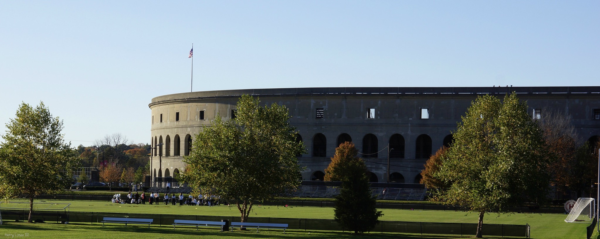

Super Bowl 54 is shaping up to be a great
game. The San Francisco 49ers will be taking on the Kansas City
Chiefs. The Chiefs have not had a super bowl appearance since 1970
while the 49ers had an appearance in 2013. Both of these coaches
are attempting to redeem themselves by taking home a super bowl
win this year. 49ers coach Kyle Shanahan was an assistant coach
for the Atlantic Falcons when they experience an embarrassing
comeback from 28-3 in super bowl 51. The Chiefs head coach Andy
Reid had a super bowl appearance back in 2005 with the
Philadelphia Eagles, he lost to the Patriots 24-21.

San Francisco has made an incredible comeback from last year.
They are the fourth team to make it to the super bowl with a
record of 4-12 or worse the year prior. This improvement was
made possible by head coach Kyle Shanahan and QB Jimmy Garoppolo.
Under their leadership, the 49ers have regained confidence and
improved on almost every front.

Ever since Patrick Mahomes returned from injury, Kansas City has
looked unstoppable. Their ability to move the ball is incredible.
WR Tyreek Hill has been burning corners left and right, he is
definitely a key player in this important game. He will likely
be covered by San Francisco's Richard Sherman, one of the best
corners in the league right now, who might have issues
containing Hill's speed.
Predictions
ESPN reports that the Kansas City Chiefs are favored to win by a small amount.
EA Sports Madden 2020 simulated the game and the Chiefs came out on top. Here
at Ah Sue news, we know that this is going to be a close game, but we are confident
that Mahomes and his offense are not enough for the powerhouse defense of the 49ers.
The 49ers have been a powerhouse team all year. They only lost three games this season,
and all of the losses were extremely close. The San Francisco 49ers seem unstoppable,
Kansas City will have a difficult time getting the ball down the field. San Francisco
has developed a strong run game that will give them the upper hand against Kansas City.
Final Prediction: 31 – 28 49ers.